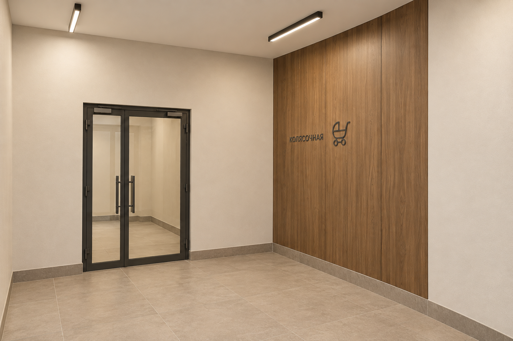
A1
Основной вариант — колясочная
Новая детализация древесного варианта: двери, панели, пол, плинтусы и свет.
Три ракурса основного древесного решения и десять альтернатив: пять с деревом, пять с гибким мрамором и золотистыми вставками.
Один комплект отделки в трёх интерьерных ракурсах. Сначала оцените основной дизайн, затем сравните D1–D5 и M1–M5. Для правок укажите код и что хочется изменить.

Новая детализация древесного варианта: двери, панели, пол, плинтусы и свет.
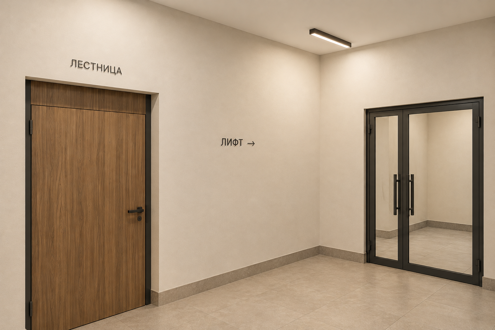
Тот же дизайн в ракурсе входа: узнаваемая лестница и читаемый путь к лифту.
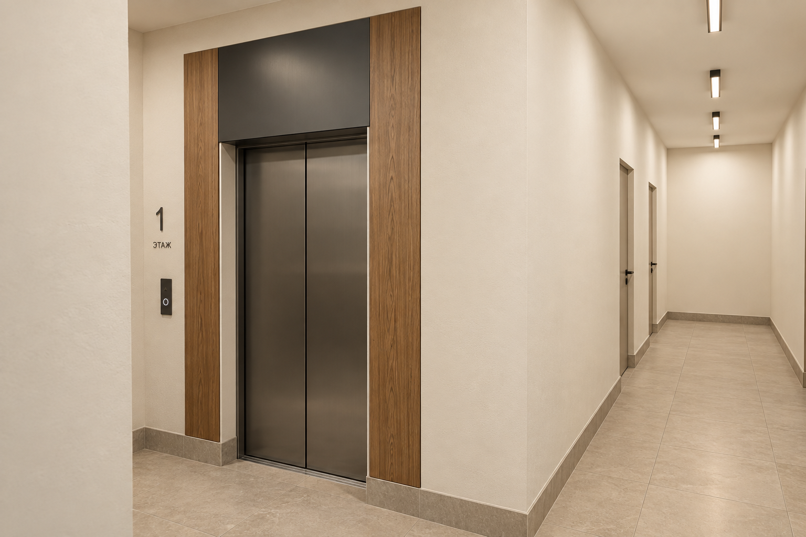
Тот же комплект отделки: древесное обрамление, сатинированный металл и светлый коридор.
Один исходный ракурс для сравнения пяти вариантов композиции и отделки.
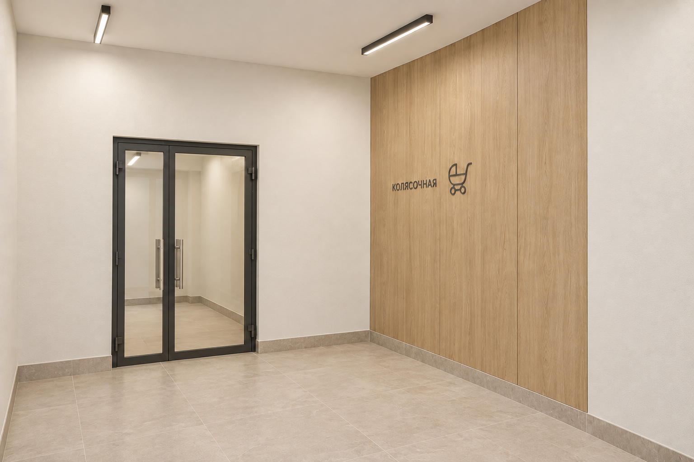
Светлый дуб, молочные стены и светлый каменный пол.
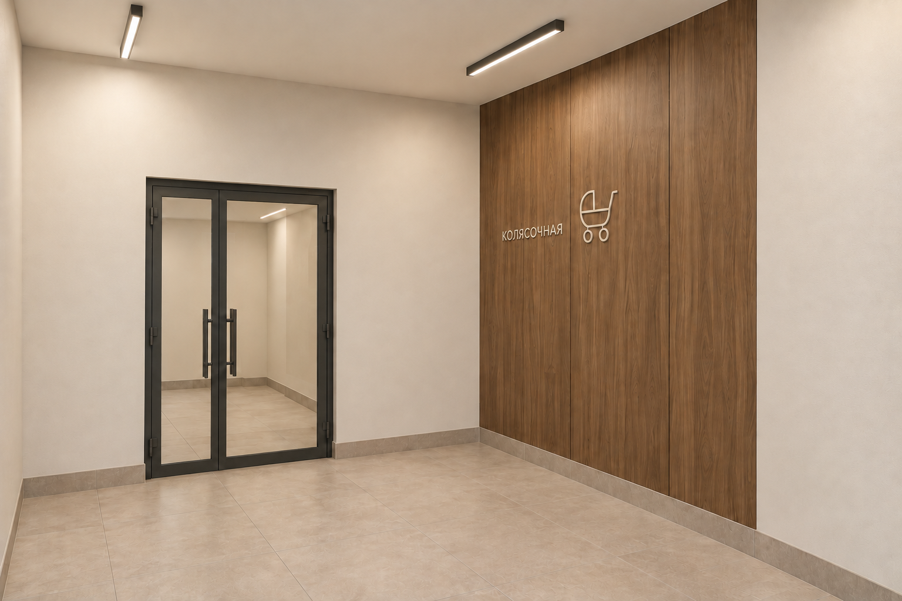
Нейтральный орех и тонкая графитовая фурнитура на светлой основе.
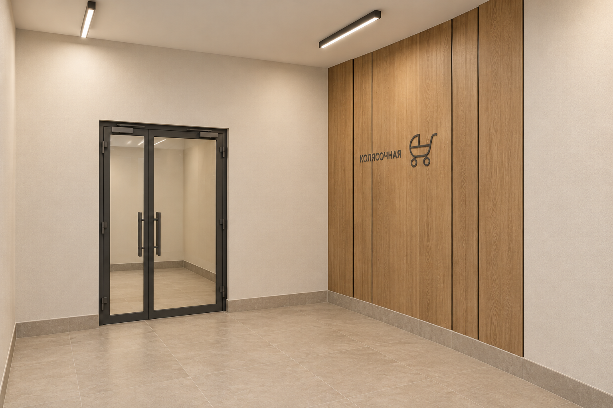
Дубовые панели разной ширины с тонкими тёмными швами.
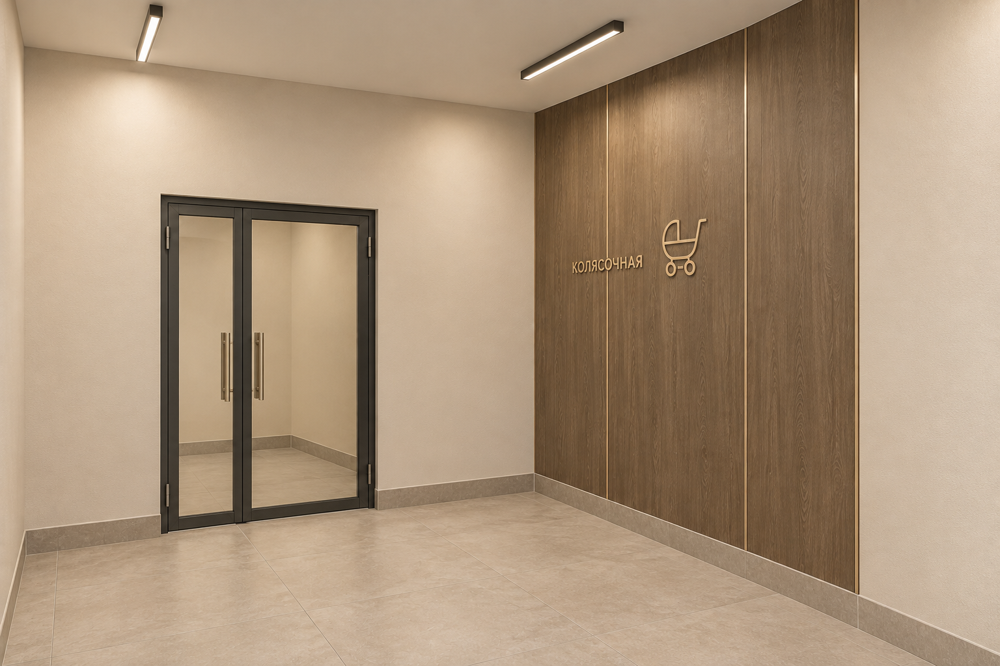
Дымчатый дуб с несколькими тонкими вставками цвета шампань.
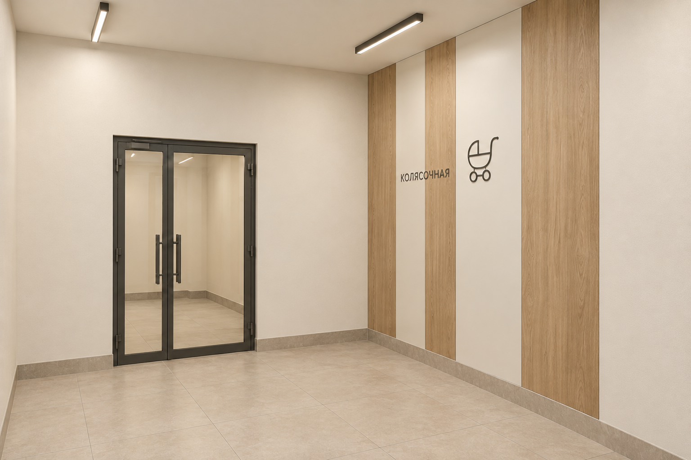
Широкие древесные вставки чередуются с молочными поверхностями.
Тонкая декоративная облицовка с мраморным рисунком, спокойная светлая база и небольшие металлические акценты.
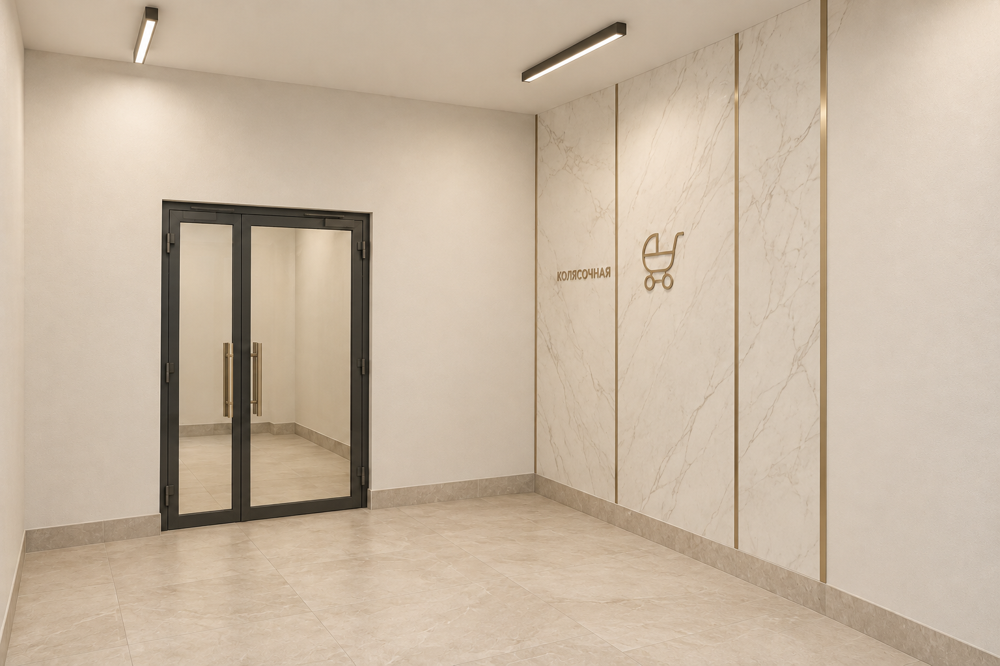
Белый мраморный рисунок и тонкие вставки шампань.
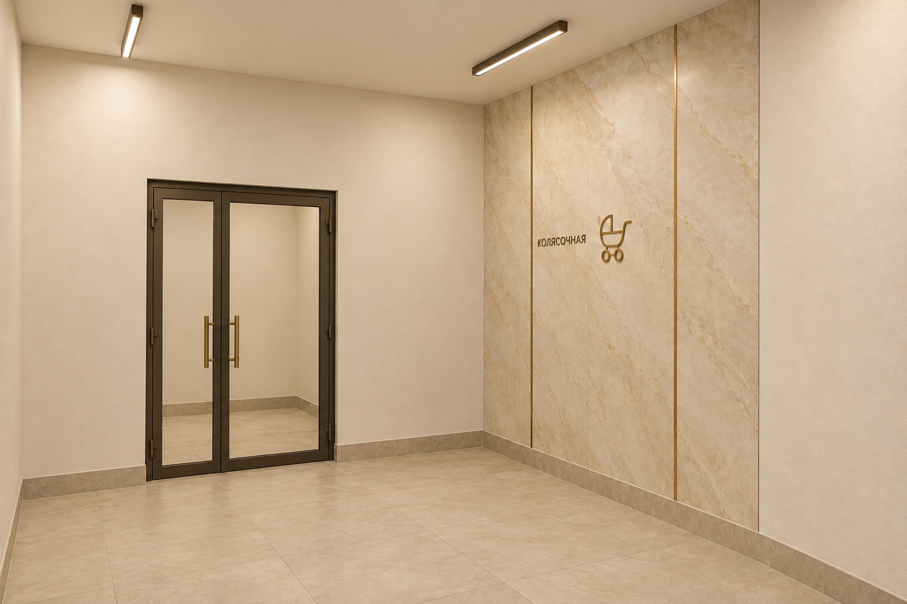
Кремово-бежевый рисунок и сдержанные тёплые золотистые детали.
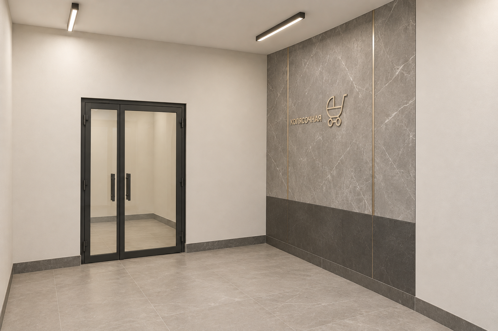
Светло-серый рисунок, графитовые детали и минимум шампани.
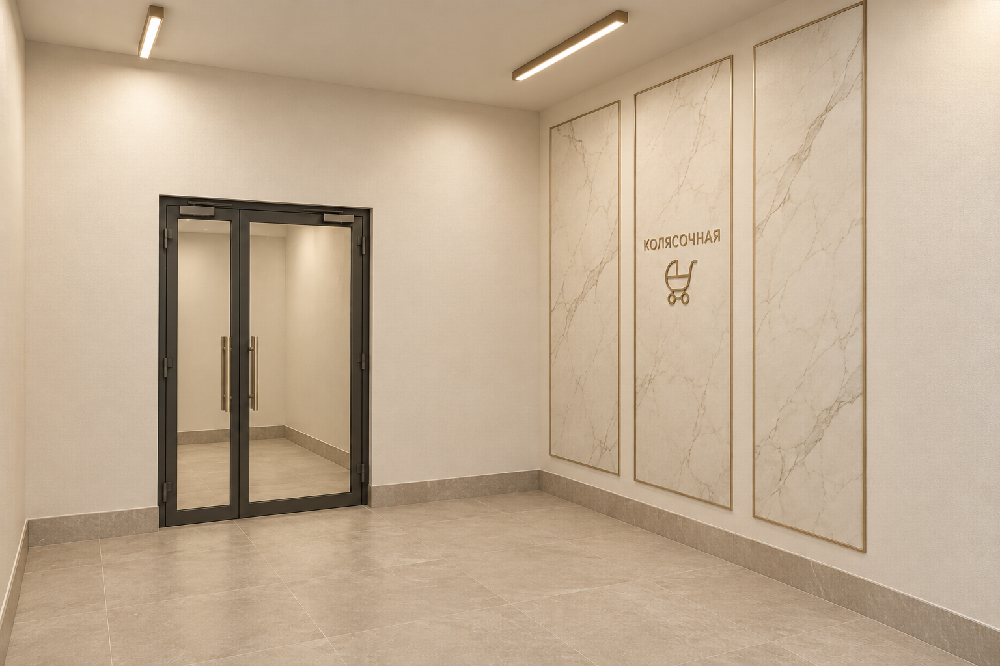
Три плоских мраморных панно в тонких рамках цвета шампань.
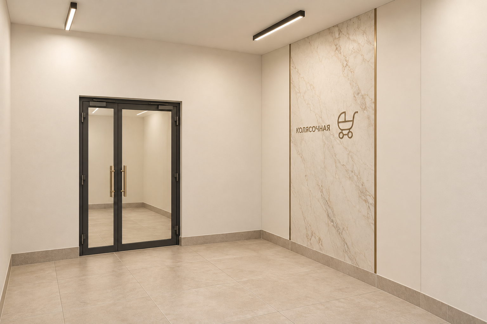
Одна центральная мраморная вставка среди молочных поверхностей.
Пространственная основа для новых изображений.